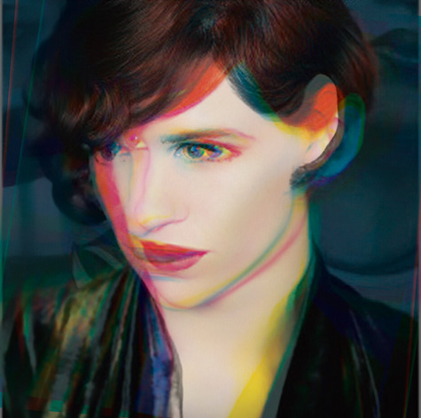
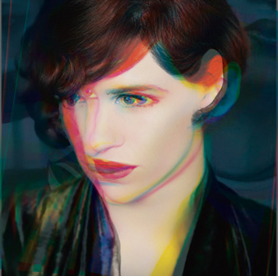

This is an in-text link.
<p>This is an<a href="index.html">in-text link</a></p>
<ol>
<li>One</li>
<li>Two</li>
<li>Three</li>
</ol>
.overlay, .shop_img
<div class="overlay">
<a href="#">
<img class="shop_img" src="images/water_volume.jpeg" alt="The Water Volume Cover" >
</a>
</div>
<h1>Heading1</h1>
<h2>Heading2</h2>
<h3>Heading3 </h3>
<h4>Heading4</h4>
Proin sollicitudin molestie auctor. Ut rutrum eros at nisi dignissim, sit amet maximus neque laoreet. Cras ullamcorper suscipit tincidunt. In a urna a mauris condimentum fermentum id quis ipsum. Pellentesque neque orci, ornare ac arcu mattis, posuere pretium tortor. Curabitur eu dolor vel nisi dapibus dapibus. Maecenas sodales risus vitae orci interdum venenatis.
Mauris tempus euismod finibus. Vestibulum in tristique nulla, id semper dui. Etiam blandit dapibus molestie. In luctus elementum magna, a mattis risus ornare vestibulum. Quisque commodo dictum lacus. Morbi suscipit pretium nunc nec lacinia. Curabitur rhoncus eget dui id pulvinar. Proin mauris urna, tempus in augue ut, bibendum convallis dolor. Morbi malesuada, libero vitae imperdiet lacinia, nunc elit tristique nulla, in rhoncus ligula tellus ut felis. Aenean ultrices, urna eu ullamcorper porttitor, libero libero luctus eros, vitae vehicula diam neque sit amet ipsum. Aenean tincidunt velit interdum, sagittis nisl nec, eleifend massa. Aliquam augue erat, ultricies ac molestie non, interdum ac velit.
<p>Proin sollicitudin molestie auctor. Ut rutrum eros at nisi dignissim, sit amet maximus neque laoreet. Cras ullamcorper suscipit tincidunt. In a urna a mauris condimentum fermentum id quis ipsum. Pellentesque neque orci, ornare ac arcu mattis, posuere pretium tortor. Curabitur eu dolor vel nisi dapibus dapibus. Maecenas sodales risus vitae orci interdum venenatis.</p>
<p>Mauris tempus euismod finibus. Vestibulum in tristique nulla, id semper dui. Etiam blandit dapibus molestie. In luctus elementum magna, a mattis risus ornare vestibulum. Quisque commodo dictum lacus. Morbi suscipit pretium nunc nec lacinia. Curabitur rhoncus eget dui id pulvinar. Proin mauris urna, tempus in augue ut, bibendum convallis dolor. Morbi malesuada, libero vitae imperdiet lacinia, nunc elit tristique nulla, in rhoncus ligula tellus ut felis. Aenean ultrices, urna eu ullamcorper porttitor, libero libero luctus eros, vitae vehicula diam neque sit amet ipsum. Aenean tincidunt velit interdum, sagittis nisl nec, eleifend massa. Aliquam augue erat, ultricies ac molestie non, interdum ac velit.</p>
.logo, #nav-toggle, .nav-toggle
<img class="logo" src="images/logo.jpg" alt ="logo" >
<input type="checkbox" id="nav-toggle" class="nav-toggle">
<nav>
<ul>
<li><a href="#0">About</a></li>
<li><a href="#1">Project</a></li>
<li><a href="#2">Contact</a></li>
<li><a href="#2">Website Templates</a></li>
</ul>
</nav>
<label for="nav-toggle" class="nav-toggle-label">
<span></span>
</label>
Oxygen-Bold
Oxygen-Lighter

Paragraph & All Heading
#000000

Body Background
#f6f3f0

Navigation
#ffffff
We use a lot of pictures of outdoor activities and stories about people. The Colour of the images has nothing to do with the website's Colour palettes. We want this pictures to be clear, high quality and real.

This project requires is to use adobe illustrator to design a brand book for a virtual company, including a logo, business card and letterhead. I like kayaking very much, so I immediately thought of the idea of companies related to kayak. So I started to search the store that I often rent kayak's website. I know that they can provide kayak, paddleboard and surf ski for people to rent and purchase, and offer courses and maintenance services. So the information on the site and my experience with the kayak. I sketched an idea map, and then started to develop the Company type, target customers, Company Profile.
The company's name is Adventurer because I think people who like kayak are courageous and adventurous. Adventurer offers kayak rentals, sales, courses and Tours. The target customers are People 6-75 years of age, who love outdoor activities and enjoy maritime sports and those who like a little adventurous.
After determining these contents, I began to design the brand book for this company.
At first, I wanted to combine the logo with the company name because kayak's shape is similar to "A." So I searched a lot of fonts, and I came up with a font that looked very vivid, which was reminiscent of motion, water. Besides, the "A" in this font is more similar to the shape of kayak than other fonts. Therefore, I tried sketching the kayak shape and the company name together. Also, I put the company name into the shape of the kayak, or try to draw people's posture when they are kayaking. Then I drew the logo I was satisfied with ai and painted it with the colour of the ocean. It turned out not to be what I wanted.


So I tried to start with the shape of the kayak. I used Ai to draw a 3d kayak in 2d on the computer. Due to kayak's symmetry, I removed some of the unnecessary kayak elements, leaving half shape, rope and half seat. Next, I tried to colour in the diamond and triangle of the rope. I chose the colours that represent the ocean, and they are all cool colours because I think kayak needs calmness and perseverance to complete, so the colours are different types of blue and gray. Gray is the refraction of waves in the sun; the human eye can see the colour. Also, I added a paddle across the kayak to make it like the letter "A."

This project requires to use Adobe Photoshop to design a poster for a movie you like. The style of the poster is related to the art movement involved in the class, and you need to find a sign of this style to imitate and design your poster. The Danish Girl, about The world's first recorded transsexual, came to my mind The other day. In the first half of the film, the hero appears as a male figure and the second half as a female figure, which reminds me of my search for a poster of art movement style.

Then I started to search the background of this poster and other works of the author.

In all designed movements, I prefer the New Wave. The New Wave was influenced by the International Style. New Wave design was influenced by Punk and postmodern language theory("April Greiman - New Wave Design - Graphic Design Women" 2016). "But there is a debate as to whether New Wave is a break or a natural progression of the Swiss Style. Sans-serif font still predominates, but the New Wave differs from its predecessor by stretching the limits of legibility. The break from the grid structure meant that type could be the set center, ragged left, ragged right, or chaotic. The artistic freedom produced common forms, such as the bold stairstep. The text hierarchy also strayed from the top-down approach of the International Style. The text became textured with the development of transparent film and the increase in the college in graphic design. Further breakdown of minimalist aesthetic is seen in the increase of the number of type sizes and colours of fonts" ("New Wave Design," 2015).
"The value of New Wave within graphic design is that improved on Swiss Design, and embraced the new technologies of the time" ("New Wave Design" 2015).
In all designs, I like Melchior Imboden's works. His work has an energetic colour vibration, and the use of colour is high contrast and bold(Ocko, B. 2002). The elements involved are fonts, shapes, lines and spatial relationships(Ocko, B. 2002). His work also shows his deep interest and participation in photography(Ocko, B. 2002). He creates a dense active graphics space that limits colours and oversized sans serif fonts to or beyond the edge of the poster. He also loves to overlap different elements(Ocko, B. 2002).
Therefore, my work combined the first and second pictures，and use two pictures of the person and four colours: red, yellow, blue and black and then overlapped them. The front will be sans-serif. I also paid particular attention to the style of grids and Photoshop skills.

 

I'm Kylie, is a SIAT student at SFU and has learned graphic design, video editing, 3D animation, and a little programming. I'm passionate about graphic design and Renaissance art. With the background in both design and coding, I strive to bring wild ideas t. I also like travelling while exploring other cultures at the same time.